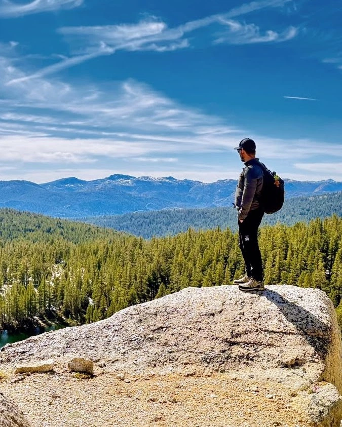

Biologist · Biogeographer · Programmer
Baltazar González
I work on how climate reshapes species and their interactions across scales that rarely meet: a single bee's foraging season, and 3.3 million years of carnivore biogeographic history. I've specialized in building the automated, robust pipelines those analyses run on — and turning them into results, maps, and tools that hold up in research, conservation, and policy.
Selected work
About
I'm a postdoctoral researcher at the University of California, Merced. My work asks how ecological and evolutionary processes shift across space and time as the climate changes — right now using pollination and seed dispersal as model systems, because both underpin biodiversity and food production, and both can fail quietly before anyone notices.
I trained as a field biologist. My doctorate at the Universidad Nacional de La Plata revised the systematics and biogeography of the shrew-opossums, an entire order of Andean marsupials, and before that I spent years running camera traps, mist nets, and conservation work surveys across Colombia. That background is why I care less about model elegance than about whether a result is relevant for current conservation and sustainability policies.
The other half of what I do is programming. I build the automated, reproducible workflows that large biodiversity projects need and rarely have: range-map pipelines for a ten-volume mammal handbook, Shiny platforms where dozens of specialists curate national conservation assessments, report generation that used to take months. I've done this for Springer Nature, for Sociedad Argentina para el Estudio de los Mamiferos, for Argentina's Ministry of Environment, for the FABLE Consortium, and for the Wildlife Conservation Society.
I'm looking at both academic positions and applied roles in conservation and environmental organisations — anywhere the analysis feeds directly into what gets protected, funded, or monitored. I work in Spanish and English, and I've done fieldwork and consulting across Colombia, Argentina, and the United States.

- LanguagesSpanish, English
- ProgrammingR, Python, JavaScript, SQL
- GeospatialQGIS, GEE, ArcGIS, R, Python
- Web appsShiny, Flask, React, HTML5
- Field methodsCamera traps, mist nets, live trapping
- DesignInkscape, Illustrator, GIMP
- Based inMerced, California
Selected publications
- González, B., Argueta-Guzmán, M.P., Mora-Sibaja, J., Salerno, V., Tang, A., Crall, J.D., McFrederick, Q. & Gaiarsa, M.P. Climate-driven shifts in bee and floral vulnerability alter when and where conservation is needed. Communications Biology · in revision, 2026
- Salerno, V., Tang, A.T.So., Mora, J., Argueta-Guzmán, M., González, B., Peterson, S.S., McFrederick, Q.S., Gaiarsa, M.P. & Crall, J. (2026). osmiaCAM: a low-cost imaging system for linking solitary bee foraging, nest provisioning, and environmental sensitivity. Integrative and Comparative Biology · DOI
- Brook, B., González, B., Tomasco, I.H., Verzi, D.H. & Martin, G.M. (2025). Within the forest: a new species of Ctenomys from northwestern Patagonia. Journal of Mammalogy 106(1) · DOI
- Martin, G.M., González, B., Brook, F. et al. (2024). Requiem for Argentine mammals: a spatial framework for mapping extinction risk. Journal for Nature Conservation 82 · DOI
- González, B., Ferro-Muñoz, N., Calvache, C., Rojas, D. & Martin, G.M. (2024). Mind the gap: new records of Caenolestes in the Western Andes of Colombia challenge its current biogeographic patterns. Journal of Mammalogy · DOI
- Frank, F., Volante, J., Calamari, N., Peri, P.L., González, B. et al. (2023). A multi-model approach to explore sustainable food and land use pathways for Argentina. Sustainability Science 18(1) · DOI
- Martin, G.M., González, B. & Monjeau, A. (2021). Continental assessment of South American marsupial conservation priorities using a spatially explicit indicator. Biological Conservation 256 · DOI
- González, B., Soria Escobar, A.M., Rojas Díaz, V., Pustovrh, M.C., Monsalve, L.S. & Rougier, G.W. (2020). The embryo of the silky shrew opossum: first description of the embryo of Paucituberculata. Journal of Morphology 281(3) · DOI
Twenty-plus peer-reviewed papers in total — full list on Google Scholar.
Assessments & technical reports
- Gaiarsa, M.P., González, B., Argueta-Guzmán, M. et al. Pollination in a changing world: the effects of habitat and temperature on the health of California's wild pollinators. California's Fifth Climate Change Assessment, California Natural Resources Agency · in press
- Martin, G.M. & González, B. (2026). Red List assessments for Caenolestes caniventer and Caenolestes condorensis. IUCN Red List of Threatened Species · T40521 · T136743
- Martin, G.M. & González, B. (2025). Red List assessment for Rhyncholestes raphanurus. IUCN Red List of Threatened Species · DOI
Contact
Open to research posts and applied conservation roles — get in touch.
baltazargch@gmail.com · Merced, California